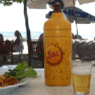
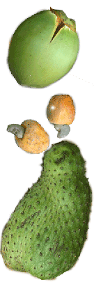

|

| Kto latem jezdzi do Brazylii? |
| Jak tam dotrzec? |
| Jericoacoara |
| Baza |
| Wiatr |
| Spot |
| Zdrowie |
| Jedzenie i wrazenia |
| Co poza windurfingiem? |
| Statystyki |
Restauracji jest cała masa i ceny zróżnicowane. Duża lokali serwuje kuchnię włoską, ze względu na wielu, zarówno zamieszkałych jak i przyjezdnych Włochów.
Znajduje się tu również jedna z pięciu najlepszych restauracji w Brazylii (wg przewodnika Brazil Lonley planet) – Carcara.
Dania w Brazylii są ogromne. Daniem dla jednej osoby najedzą się i dwie. A danie dla dwóch osób było nie do przejedzenia dla naszej trójki. Świeże owoce morza, ryby, kurczak, pyszna wołowina.
Ceny w restauracji podobne do średnich cen polskich.
Wrażenia
Przede wszystkim wielkie przestrzenie i mało ludzi.
I ogromna bieda. O ile klasa średnia wydaje się żyć na podobnym poziomie do polskiej klasy średniej to bieda jest nieporównywalna. W sumie podobna do tego co widzimy w Egipcie, z tą różnicą, że nie śmierdzi i wszystko jest dużo bardziej zadbane i czyste.
Za to w każdej, najmniejszej nawet dziurze jest boisko piłkarskie i to pięknie utrzymane. Zielona trawka, nawadniane.
Poza tym wielka ilość owoców, których nazw nie ma po polsku i przepyszne wyciskane z nich soki. Soki wyciskają tutaj ze wszystkiego; arbuza, melona, mango, ananasa, winogron, aceroli, guyaby, limonki, pomarańczy, caju.
Caju to owoc, który u góry ma orzeszka nerkowca, które je się po uprażeniu, a z owoca można wycisnąć sok.
Piwo w koszulce chroniącej przed ogrzaniem  |
Graviola, kokos i owoc caju |
|  |